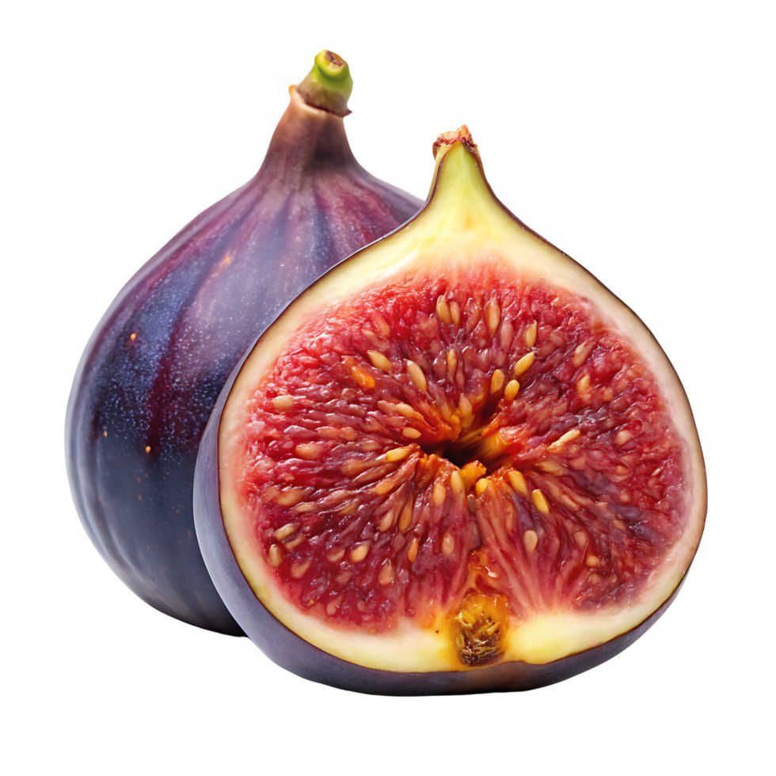

Fig

| Index |
|---|
| Short description |
| Nutritional value |
| Health benefits |
| Best time to eat |
| Who shoud avoid |
| Fun fact |
Short Description
Fig is a soft, pear-shaped fruit with a sweet taste and many tiny edible seeds inside. It grows in warm climates and can be eaten fresh or dried. Figs have been consumed since ancient times for both nutrition and medicine.
Nutritional Value
| Nutrient | Amount |
|---|---|
| Calories | 74 kcal |
| Carbohydrates | 19 g |
| Dietary Fiber | 2.9 g |
| Calcium | 35 mg |
| Potassium | 232 mg |
| Iron | Present |
Health Benefits
- Improves digestion and prevents constipation
- Supports bone health due to calcium
- Helps regulate blood pressure
- Boosts energy naturally
- Improves heart health
Best Time to Eat
Figs are best eaten in the morning or before meals. Eating figs on an empty stomach helps improve digestion and nutrient absorption.
Avoid eating figs:
- Late at night
- In excess quantities
Best practice: Morning + soaked figs for better digestion.
Who Should Avoid
- Diabetic patients, due to natural sugars
- People with diarrhea, as figs have laxative effee
- Those allergic to latex, as figs may trigger reactions
Fun Fact
- Figs are actually inverted flowers, not true fruits
- Fig trees can live for over 100 years
- Figs were one of the first cultivated fruits